관리자: 사전 준비 → Fabric 설정 A1–A9 → 인계.
참가자: 관리자의 준비 완료 안내를 받은 뒤 참가자 확인 P1부터 시작하세요. 테넌트 관리자 역할은 필요하지 않습니다.
브라우저만으로 실습 전 빈 Fabric 실습 환경을 준비합니다. 관리자에게는 보안 그룹·용량·워크스페이스·필요한 기능 설정을, 참가자에게는 로그인과 메뉴 접근 확인을 안내합니다. 명령줄 작업은 없습니다.
관리자: 사전 준비 → Fabric 설정 A1–A9 → 인계.
참가자: 관리자의 준비 완료 안내를 받은 뒤 참가자 확인 P1부터 시작하세요. 테넌트 관리자 역할은 필요하지 않습니다.
완료 상태: 승인된 참가자가 지정 워크스페이스에 들어가 Notebook/Lakehouse의 새 항목 메뉴를 사용할 수 있습니다. 데이터 업로드, Lakehouse·Notebook 실제 생성, 모델 배포, 온톨로지·에이전트 작성/배포는 이 문서의 범위 밖입니다.
Microsoft 365로의 직접 게시에는 별도의 제품 라이선스·관리자 정책·배포 요건이 있으며 여기서는 게시하지 않습니다.
Fabric와 Azure 구독은 같은 Entra 테넌트를 사용합니다. 조직 계정, MFA/조건부 접근 정책, 승인된 구독·리전·예산·실습 기능 목록을 먼저 확인하세요. 기존 유료 용량이 준비되어 있다면 재사용 승인을 받고 신규 구매와 체험 시작을 건너뜁니다.
| 담당 | 필요 권한과 경계 |
|---|---|
| 그룹 담당자 | Entra Groups Administrator가 보안 그룹과 참가자 멤버십을 관리합니다. 사용자 계정 생성이 필요하면 사용자 관리 담당자에게 요청합니다. |
| 테넌트 설정 담당자 | Fabric Administrator는 Entra 테넌트 역할입니다. Privileged Role Administrator 또는 Global Administrator가 승인된 운영자에게 할당합니다. 적격(Eligible) 역할이면 먼저 PIM에서 활성화합니다. |
| Azure 리소스 담당자 | 해당 범위의 Contributor 또는 승인된 사용자 지정 역할은 리소스 생성을 허용합니다. Contributor만으로 역할 할당은 할 수 없습니다. |
| Azure 권한 할당 담당자 | 대상 범위의 Microsoft.Authorization/roleAssignments/write가 필요합니다. Owner, User Access Administrator 또는 Role Based Access Control Administrator 등의 권한과 할당 조건을 확인합니다. UI에서도 동일합니다. |
| 용량 / 워크스페이스 담당자 | Capacity admin은 특정 용량을, Workspace Admin은 해당 작업 영역을 관리합니다. 직접 용량을 연결하는 운영자는 Workspace Admin과 대상 용량의 Contributor 권한(또는 용량 관리 권한)이 필요합니다. Workspace Contributor와 Capacity Contributor는 다르며 Fabric 테넌트 관리자와도 별개입니다. |
| 참가자 | Fabric 사용자 라이선스와 워크스페이스 Contributor 권한. 참가자에게 테넌트 관리자나 구독 Owner를 주지 않습니다. |
| 용도 | 예시 |
|---|---|
| 리소스 그룹 | rg-fabric-workshop |
| Fabric 용량 | capfabricworkshop01 — 고유한 소문자/숫자 접미사를 추가하고 포털 유효성 검사를 통과시킵니다. |
| 워크스페이스 | ws-fabric-workshop |
| 참가자 보안 그룹 | grp-fabric-workshop-participants |
Microsoft.Fabric을 검색합니다. 필요하면 Register를 선택하고 등록 상태를 확인합니다. 등록에는 구독 범위의 등록 권한이 필요하며, 리소스 그룹 Contributor만으로 충분하지 않을 수 있습니다. 불필요한 공급자는 등록하지 않습니다.구매 전 리전별 워크로드·미리 보기 기능 가용성·가용 CU 쿼터·가격을 확인합니다. F8을 모든 실습의 정답으로 간주하거나 고정 Spark 동시 실행 수를 가정하지 마세요. 필요한 워크로드, 인원, 예산에 맞는 유료 SKU를 운영자가 선택합니다.
진행 전 확인: A3의 구매 운영자도 Fabric Free 또는 Power BI 라이선스가 필요합니다. 없으면 A4의 라이선스 확인을 먼저 수행하세요. A5의 작성자가 워크스페이스 생성 정책의 허용 범위에 있는지도 확인합니다. 이 UI 가이드는 후속 AI 실습을 위해 승인된 유료 용량을 사용하며, 상위 가이드의 선택적 체험 경로와는 다릅니다. F2는 Copilot/Data Agent의 최소 용량 요건이지 모든 미리 보기 기능·리전·실습 성능의 보장은 아닙니다.
목표: 워크스페이스 권한과 승인된 테넌트 기능의 대상을 하나의 검토된 멤버 목록으로 관리합니다.
클릭 경로: Entra 관리 센터 → Entra ID → Users → All users에서 참가자 확인 → Groups → All groups → New group.
입력: Group type은 Security, Group name은 grp-fabric-workshop-participants, Membership type은 Assigned를 선택합니다. Members에서 승인된 참가자를 추가하고 Create를 누릅니다. 이 참가자 그룹에 Entra 역할을 할당하도록 설정하지 않습니다.
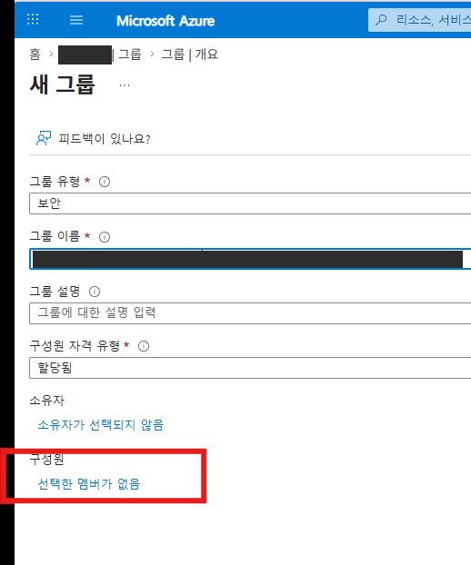
기대 결과: 생성한 보안 그룹의 Members 목록에 승인된 참가자만 표시됩니다. 동명이인은 실제 계정 정보를 비공개로 대조합니다. 그룹 생성 자체는 Fabric 접근 권한을 주지 않습니다.
목표: 용량 관리자와 별도로 테넌트 설정을 관리할 운영자를 준비합니다.
클릭 경로: Entra 관리 센터 → Roles & admins → Fabric 검색 → Fabric Administrator → Add assignments → 승인된 운영자 선택 → Add.
입력: 참가자 그룹이 아니라 승인된 운영자 계정을 선택합니다. Privileged Role Administrator / Global Administrator가 수행하며, PIM으로 적격 할당을 받은 운영자는 Privileged Identity Management → My roles → Microsoft Entra roles → Activate에서 필요한 승인을 완료합니다.
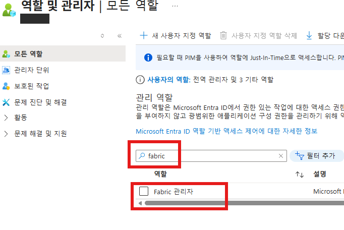
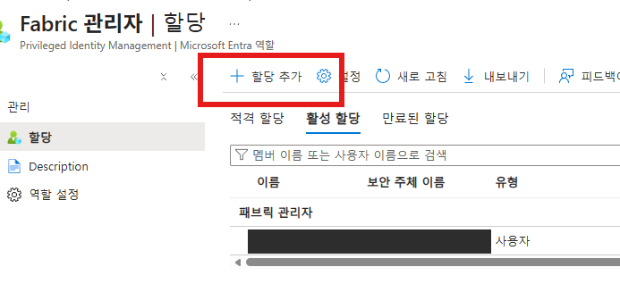
기대 결과: 운영자의 역할이 활성 상태이고 재로그인 후 테넌트 설정을 볼 수 있습니다. 역할/그룹 변경 전파에는 시간이 걸릴 수 있으며 고정 최대 시간을 보장하지 않습니다.
목표: 실습 워크스페이스를 호스팅할 유료 용량을 준비합니다. 기존 승인 용량이 있다면 생성 대신 상태·리전·할당 권한을 확인합니다.
클릭 경로: Azure Portal → Microsoft Fabric 검색 → Create Fabric Capacity → Basics → Review + create → Create → 리소스 Overview.
입력: 승인된 Subscription, rg-fabric-workshop, 고유 접미사를 붙인 capfabricworkshop01, 지원되는 승인 Region, 예산에 맞는 Size/SKU, Fabric capacity administrator를 지정합니다. 관리자는 같은 테넌트의 사용자이며 B2B 게스트는 불가합니다. 가격과 정책 검증 결과를 검토한 뒤에만 생성합니다.
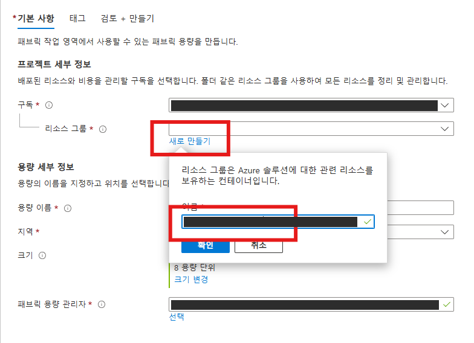
기대 결과: 배포 성공 후 용량 상태가 Active입니다. 중지 상태라면 승인된 담당자가 재개합니다. 용량 생성은 워크스페이스 생성이나 참가자 권한 부여와 다릅니다.
목표: 개인 라이선스와 조직 용량을 구분하고 불필요한 체험을 시작하지 않습니다.
클릭 경로: Fabric 포털 → 조직 계정 로그인 → 프로필의 계정/라이선스 정보 확인. 라이선스가 없을 때만 허용된 Free 가입 화면을 사용하거나 라이선스 관리자에게 할당 요청.
입력: 승인된 조직 계정으로 진행합니다. Microsoft Fabric (Free) 사용자 라이선스는 체험 용량이 아닙니다. 셀프서비스 가입은 필요한 경우에만 조직 정책이 허용할 때 사용합니다. 차단되면 전체 테넌트 가입 정책을 바꾸지 말고 라이선스 관리자에게 요청합니다.
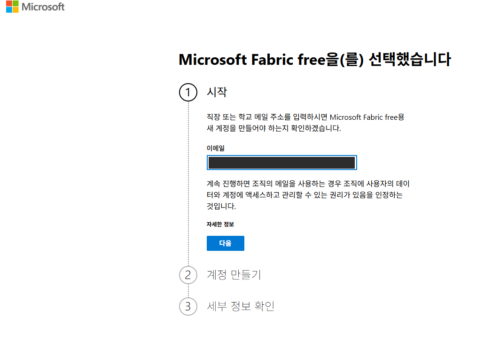
기대 결과: 참가자가 적절한 사용자 라이선스로 로그인하고 준비된 유료 용량의 워크스페이스를 사용합니다. 체험 권유만으로 접근 차단을 단정하지 않습니다. Power BI 작성·공유·열람 라이선스는 상위 가이드 §1.2와 공식 라이선스 문서를 별도로 확인합니다.
목표: Azure 리소스가 아니라 Fabric 작업 영역을 만들고 올바른 용량에 연결합니다.
클릭 경로: Fabric → Workspaces → New workspace → 이름 → Advanced / Apply. 이후 Workspace settings → Workspace type (화면에 따라 License info / Premium) → Edit → Fabric capacity → 대상 용량 → Apply.
입력: 이름은 ws-fabric-workshop. Fabric capacity 유형에서 A3의 승인된 유료 용량을 선택합니다. 생성 화면에서 연결할 수 있으면 바로 지정하고, 생성 후에도 설정을 다시 확인합니다. 목록에 용량이 없으면 임의 체험을 시작하지 말고 용량 담당자에게 Capacity settings → 대상 용량 → Contributor permissions에서 해당 Workspace Admin/운영자 그룹의 할당 권한을 확인하도록 요청합니다.
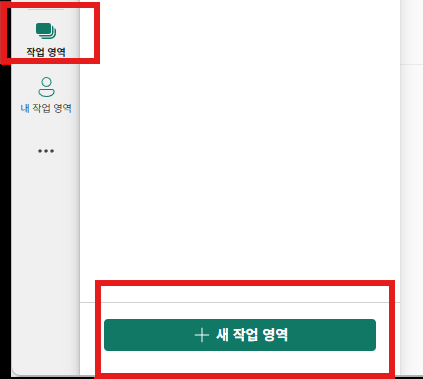
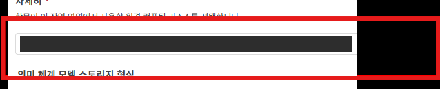
기대 결과: 빈 워크스페이스가 보이며 설정에 올바른 유료 용량이 표시됩니다. My workspace, Pro/PPU 또는 의도하지 않은 Trial로 남아 있지 않은지 확인합니다.
목표: 작성 실습에 필요한 워크스페이스 권한만 부여합니다.
클릭 경로: Fabric → 해당 워크스페이스 → Manage access → Add people or groups → 그룹 검색 → 역할 선택 → Add.
입력: grp-fabric-workshop-participants를 선택하고 Contributor로 추가합니다. 동명이 그룹을 주의하고 승인된 그룹인지 확인합니다. 참가자 편의를 위해 Admin을 부여하지 않습니다.
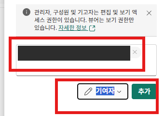
기대 결과: Manage access에 그룹과 Contributor 역할이 표시됩니다. 이 공유 워크스페이스는 참가자별 데이터 격리 환경이 아닙니다. 개인별 격리가 필요하면 별도 워크스페이스와 권한 설계를 사용합니다.
목표: 라이선스·워크스페이스 권한과 별도로 승인 그룹에 Fabric 기능을 허용합니다.
클릭 경로: Fabric → Settings(톱니바퀴) → Admin portal → Tenant settings → Users can create Fabric items 검색 → 설정 펼치기 → Apply.
입력: 승인된 범위에서 Enabled와 Specific security groups를 선택하고 grp-fabric-workshop-participants를 지정합니다. 기존 운영용 허용/제외 그룹을 임의 삭제하지 말고 변경 승인을 따릅니다. 용량 담당자는 Capacity settings의 Delegated tenant settings에서도 유효 설정을 확인합니다.
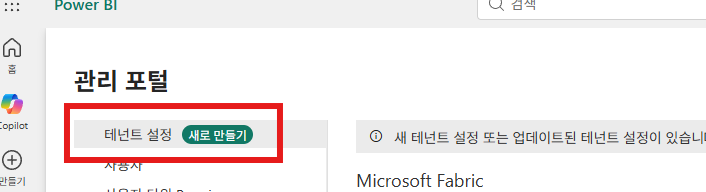
기대 결과: 승인 그룹이 유효 허용 범위에 있고 용량 수준의 설정이 실습을 차단하지 않습니다. 테넌트 설정이 안 보이면 참가자 역할을 올리지 말고 지정 Fabric 관리자에게 요청합니다.
목표: 후속 온톨로지 실습이 승인된 경우에만 Fabric IQ의 Ontology (preview) 접근을 준비합니다.
클릭 경로: Admin portal → Tenant settings → Ontology 검색 → Enable Ontology item (preview) → 승인 범위 지정 → Apply. 다음으로 Graph를 검색하여 표시되는 종속성·생성 설정을 확인합니다.
입력: 기능을 사용할 승인 그룹 grp-fabric-workshop-participants를 지정합니다. 실습에 온톨로지가 없으면 생략합니다. Graph 설정을 별도로 요구하는 포털에서는 해당 설정에도 동일하게 승인된 그룹 범위를 적용합니다.
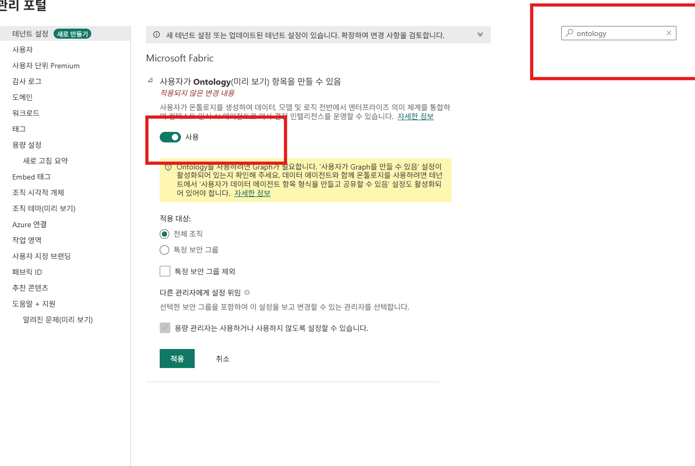
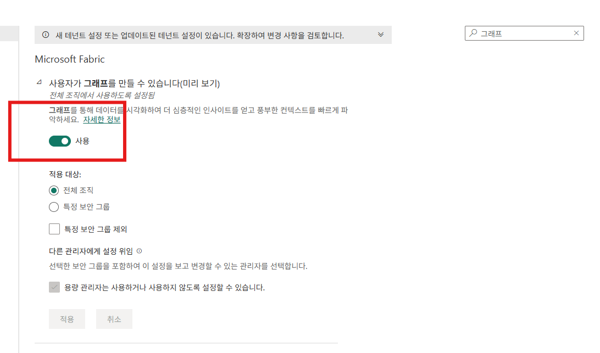
문서와 화면의 차이: 제공 화면은 Ontology에 Graph가 필요하다고 안내합니다. 2026-09-21 확인한 Learn은 온톨로지 그래프가 Fabric Graph 기반임을 설명하지만, 현재 필수 테넌트 설정 문서는 별도 Graph 토글을 명시하지 않습니다. 따라서 모든 테넌트의 고정 필수 토글이라고 단정하지 않습니다. 현재 포털이 요구하면 승인 후 적용하고, 불일치가 있으면 관리자에게 확인합니다.
후속 실습의 데이터 요건: 현재 Ontology 바인딩 문서는 Lakehouse의 managed 테이블과 OneLake security/column mapping 비활성 상태를 요구합니다. 운영 데이터의 보안을 해제하지 말고 승인된 별도 실습 데이터를 준비하세요. Data Agent로 질의할 경우 A9의 유료 용량·리전·데이터 권한 요건도 적용됩니다. 이 단계에서는 데이터를 만들거나 보안 설정을 바꾸지 않습니다.
기대 결과: 필요한 미리 보기 설정과 종속성이 승인 그룹에 적용됩니다. 이후 New item에서 메뉴 가용성만 확인하며 Ontology나 Graph 항목을 만들지는 않습니다.
목표: 후속 AI 실습에 필요한 설정만 허용하고 처리·저장·대화 기록의 지리적 경계를 검토합니다.
클릭 경로: Admin portal → Tenant settings → Copilot / Azure OpenAI / Data agent 검색 → 해당 설정 펼치기 → 승인 그룹 범위 검토 → Apply.
입력: Users can use Copilot and other features powered by Azure OpenAI를 승인 그룹 grp-fabric-workshop-participants에 허용합니다. Data Agent 생성·공유 관련 설정도 검색하되, 현재 공식 문서는 Copilot/Azure OpenAI 설정과 일반 워크스페이스 권한을 설명하며 모든 테넌트에 동일한 이름의 독립 토글이 있다고 가정하지 않습니다.
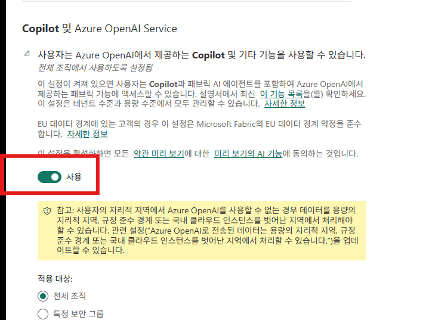
현재 일반 Copilot/Data Agent 요건은 지원 리전의 유료 F2 이상(또는 Fabric 사용 P1 이상)이며, 모든 F64 미만 용량에 별도 Fabric Copilot capacity를 의무 지정하는 것은 아닙니다. Data Agent 설정 문서가 요구하는 Capacities can be designated as Fabric Copilot capacities(관리자 문서의 Copilot in Fabric capacities)를 승인된 용량 관리자 범위에 허용하세요. 이 지정 허용과 실제 중앙 청구 용량 지정/사용자 그룹 할당은 다릅니다. 중앙 청구를 선택하면 최소 F2/P1 용량이 테넌트 홈 리전에 있어야 합니다. 워크스페이스를 이전하는 것이 아닙니다. 필요한 용량 위임 설정도 확인합니다. Standalone Copilot in Power BI 토글은 기본 Data Agent 생성의 필수 설정이 아닙니다.
경계 결정: 실제 용량 리전과 사용할 기능의 현행 요건을 확인하세요. Azure OpenAI 기반 기능에서 용량이 EU 데이터 경계와 미국 밖에 있으면 지역 외 처리 허용이 필요하며, Notebook Copilot/Data Agent에는 지역 외 저장 허용도 필요합니다. 특정 국가라고 일괄 가정하지 않습니다. 보안·개인정보 승인을 받은 해당 설정만 켜고, 승인이 없으면 해당 AI 실습을 생략합니다.
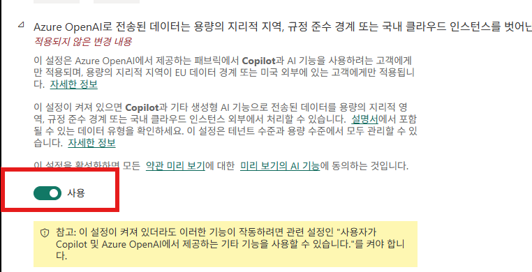
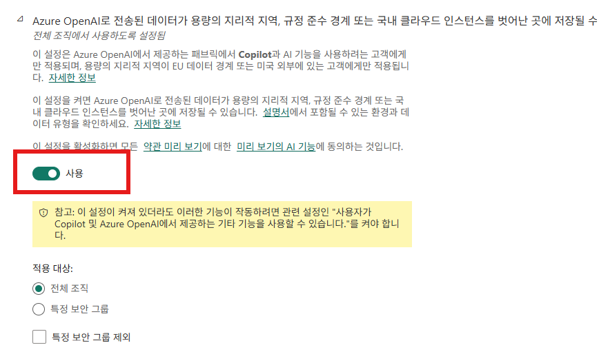
대화 기록이 저장되는 경험은 현재 문서상 사용자가 삭제하지 않으면 최대 28일 보관될 수 있습니다. OpenAI를 Microsoft 하위 처리자로 사용하는 새 설정이 보이면 Azure OpenAI 설정과 동일시하지 말고 별도의 기능·계약·국외 처리 검토를 거칩니다. 승인이 없으면 해당 AI 실습을 생략합니다.
후속 Data Agent 실습: 에이전트와 데이터 소스 워크스페이스의 용량 리전을 맞추고, 소비자에게 에이전트와 원본 데이터 각각의 읽기 권한이 있는지 확인하세요. 에이전트 공유만으로 원본 권한이 생기지 않습니다. 현재 비영어 지원을 가정하지 말고 질문·지침·예제는 영어로 준비합니다. 여기서는 에이전트를 생성하거나 호출하지 않습니다.
기대 결과: 필요한 설정·허용/제외 그룹·위임 설정·경계 승인을 비공개 변경 기록으로 남깁니다. 전파 후 메뉴를 확인하되 고정 반영 시간이나 실제 AI 실행 성공을 보장하지 않습니다. 에이전트 생성·공유·Microsoft 365 게시 자체는 후속 실습입니다.
목표: 실제 생성 없이 로그인·워크스페이스 접근·항목 메뉴 가용성을 검증합니다.
클릭 경로: Fabric 포털 → 조직 계정 로그인 → 프로필에서 계정/테넌트 확인 → Workspaces → 배정된 워크스페이스 → New item → Notebook 검색 → Lakehouse 검색.
입력: 관리자가 비공개로 안내한 계정과 ws-fabric-workshop을 사용합니다. MFA/조건부 접근을 완료하고 올바른 디렉터리를 선택합니다. 검색어는 Notebook, Lakehouse입니다. 카드를 선택해 생성되는 경우가 있으므로 검색 결과의 표시/활성 상태만 확인하고 생성 카드는 누르지 않습니다. 이름을 입력하거나 Create를 누르지 않습니다.
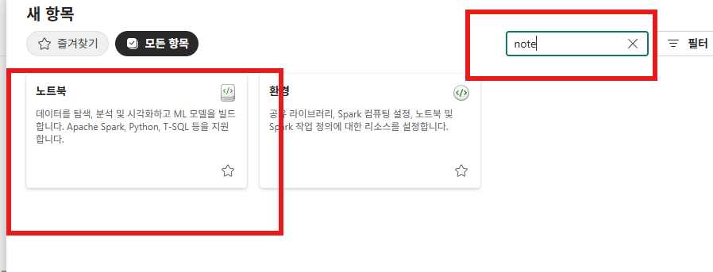
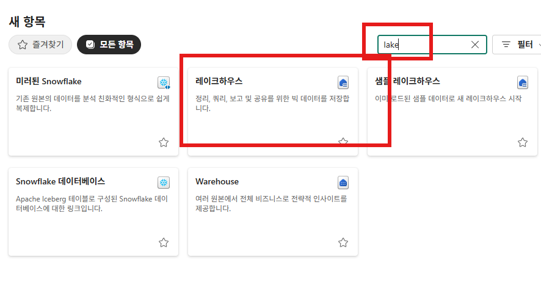
기대 결과: 지정 워크스페이스가 보이고 두 항목이 비활성화되지 않은 상태로 표시됩니다. 메뉴를 닫아도 워크스페이스는 빈 상태입니다. 이는 UI 접근 확인이며 실제 Spark 실행·데이터 쓰기·AI 기능 성공을 검증한 것은 아닙니다.
체크박스는 이 페이지에서만 확인하는 보조 도구이며 서버 전송이나 별도 저장을 하지 않습니다. 실계정·테넌트 URL·키를 입력하는 필드는 없습니다.
비공개 인계: 승인된 내부 채널로 실제 조직 계정, 테넌트/디렉터리 안내, 워크스페이스 링크와 권한 범위, 실습 가능 시간, 담당자를 전달합니다. 공개 가이드·이슈·스크린샷에 실제 UPN, 테넌트 URL, 구독/리소스 ID, 키를 게시하지 않습니다. 오류는 식별자·토큰을 제거하고 오류 코드, 발생 단계, 시각 등 필요한 최소 정보만 공유합니다.
종료 후 비용: 필요한 Azure RBAC 권한이 있는 운영자는 사용 중인 사람이 없는지 확인하고 승인된 경우 Azure Portal → Microsoft Fabric → 해당 용량 → Pause → Yes로 중지합니다. Fabric Capacity admin 역할만으로 Azure 중지 권한이 생기지 않습니다. 중지하면 콘텐츠가 사용 불가해질 수 있고 남은 초과/스무딩 사용량이 청구됩니다. OneLake 저장 비용과 예약 약정은 중지로 사라지지 않습니다. 비용·보존·삭제 정책을 검토하고 임의로 공유 리소스를 삭제하지 않습니다.
먼저 실제 계정/테넌트와 마지막 변경을 확인하고 전파 후 다시 로그인해 봅니다. 전파 지연을 고정 SLA로 해석하지 말고, 해결을 위해 조직 전체 허용이나 과도한 관리자 권한을 부여하지 않습니다.
| 증상 | 확인과 다음 조치 | 담당 |
|---|---|---|
| 워크스페이스가 안 보임 | 올바른 테넌트, 배정 링크, 보안 그룹 실제 멤버십, 워크스페이스 Manage access의 그룹/역할을 확인합니다. | 그룹 / 워크스페이스 관리자 |
| New item 비활성화 / 항목 없음 | Contributor, 사용자 라이선스, 유료 용량 연결과 Active 상태, Fabric 항목 생성 설정, 용량 위임·제외 그룹을 확인합니다. | 워크스페이스 / 용량 / Fabric 관리자 |
| Tenant settings가 안 보임 | Capacity admin만으로는 부족합니다. 운영자의 Fabric Administrator 활성 역할과 PIM을 확인합니다. 참가자는 관리자에게 요청합니다. | 역할 할당 담당자 |
| Copilot / Data Agent / Ontology 메뉴 없음 | 해당 기능의 지원 리전·유료 용량·승인 범위·위임 설정·경계 승인·미리 보기 가용성을 확인합니다. Ontology/Graph 종속성은 현재 포털과 Learn을 대조합니다. | Fabric 관리자 |
| Free 가입 차단 / Trial 권유 | Free 사용자 라이선스와 체험 용량은 다릅니다. 기존 라이선스·대상 워크스페이스 용량을 확인하고 필요할 때 라이선스 관리자에게 요청합니다. Trial 권유만으로 차단을 단정하거나 새 체험을 시작하지 않습니다. | 라이선스 / 워크스페이스 관리자 |
| 공급자 미등록 / 생성 실패 | 대상 구독 → Resource providers에서 Microsoft.Fabric을 확인합니다. 등록 권한·정책·지원 리전·쿼터·이름 유효성도 점검합니다. | Azure 구독 담당자 |
Prepare an empty Fabric workshop environment using only your browser. Administrators configure security groups, capacity, a workspace, and required features; participants validate sign-in and menu access. There are no command-line steps.
Administrators: Prerequisites → Fabric setup A1–A9 → Handoff.
Participants: after the administrator confirms readiness, start at Participant validation P1. You do not need a tenant administrator role.
Completion state: approved participants can open their assigned workspace and access the New item options for Notebook/Lakehouse. Uploading data, actually creating a Lakehouse or Notebook, deploying models, and building/deploying ontologies or agents are outside this guide.
Direct publishing to Microsoft 365 has its own product licensing, administrator policies, and deployment requirements; no publishing is performed here.
Fabric and the Azure subscription must use the same Entra tenant. Confirm organizational accounts, MFA/Conditional Access policies, the approved subscription, region, budget, and workshop feature list first. If a paid capacity is already prepared, obtain approval to reuse it and skip both a new purchase and starting a trial.
| Responsibility | Permission and boundary |
|---|---|
| Group administrator | An Entra Groups Administrator manages the security group and participant membership. If accounts must be created, request that from the user administration team. |
| Tenant settings operator | Fabric Administrator is an Entra tenant role. A Privileged Role Administrator or Global Administrator assigns it to an approved operator. Activate an eligible role through PIM before proceeding. |
| Azure resource operator | Contributor or an approved custom role at the appropriate scope permits resource creation. Contributor alone cannot assign roles. |
| Azure access administrator | Microsoft.Authorization/roleAssignments/write is required at the target scope. Check permissions and assignment conditions for roles such as Owner, User Access Administrator, or Role Based Access Control Administrator. This applies to the UI too. |
| Capacity / workspace administrator | A Capacity admin manages a particular capacity; a Workspace Admin manages that workspace. Direct assignment requires Workspace Admin and target-capacity Contributor permissions (or capacity administration permissions). Workspace Contributor and Capacity Contributor are different roles; neither is the Fabric tenant administrator role. |
| Participant | A Fabric per-user license and workspace Contributor access. Do not give participants tenant administrator or subscription Owner roles. |
| Purpose | Example |
|---|---|
| Resource group | rg-fabric-workshop |
| Fabric capacity | capfabricworkshop01 — add a unique lowercase-letter/digit suffix and pass the portal's name validation. |
| Workspace | ws-fabric-workshop |
| Participant security group | grp-fabric-workshop-participants |
Microsoft.Fabric. Select Register if needed and verify its registration status. Registration needs subscription-level registration permissions; resource-group Contributor alone might not suffice. Do not register unnecessary providers.Before purchasing, check regional workload and preview feature availability, available CU quota, and pricing. Do not treat F8 as a universal workshop size or assume fixed Spark concurrency. The operator selects a paid SKU based on the workloads, participant count, and budget.
Before proceeding: the purchasing operator in A3 also needs a Fabric Free or Power BI license. If missing, perform A4's license check first. Check that the A5 author is allowed by the workspace creation policy. This UI guide uses approved paid capacity for subsequent AI labs, unlike the optional trial path in the parent guide. F2 meets Copilot/Data Agent minimum capacity requirements; it does not guarantee every preview feature, region, or workshop performance.
Goal: manage workspace access and approved tenant features through one reviewed membership list.
Click path: Entra admin center → Entra ID → Users → All users to verify participants → Groups → All groups → New group.
Input: set Group type to Security, Group name to grp-fabric-workshop-participants, and Membership type to Assigned. Add approved participants under Members and select Create. Do not configure this participant group to receive Entra roles.
Expected result: the group's Members list contains only approved participants. Privately compare actual account details to distinguish people with the same name. Creating the group does not itself grant Fabric access.
Goal: prepare a tenant settings operator, separately from the capacity administrator.
Click path: Entra admin center → Roles & admins → search Fabric → Fabric Administrator → Add assignments → select the approved operator → Add.
Input: select the approved operator account, not the participant group. A Privileged Role Administrator / Global Administrator performs the assignment. An operator with an eligible PIM assignment completes required approvals at Privileged Identity Management → My roles → Microsoft Entra roles → Activate.
Expected result: the operator's role is active and tenant settings are accessible after signing in again. Role and group changes can take time to propagate; there is no guaranteed maximum time here.
Goal: prepare paid capacity to host the workshop workspace. If approved capacity already exists, check its state, region, and assignment permissions instead of creating another.
Click path: Azure Portal → search Microsoft Fabric → Create Fabric Capacity → Basics → Review + create → Create → resource Overview.
Input: choose the approved Subscription, rg-fabric-workshop, capfabricworkshop01 with a unique suffix, an approved supported Region, a budgeted Size/SKU, and a Fabric capacity administrator. The administrator must be a user in the same tenant, not a B2B guest. Create only after reviewing pricing and policy validation.
Expected result: deployment succeeds and the capacity reaches Active. If paused, an authorized operator resumes it. Creating capacity does not create a workspace or grant participants access.
Goal: distinguish individual licensing from organizational capacity and avoid an unintended trial.
Click path: Fabric portal → sign in with an organizational account → inspect account/license information in the profile. Only if a license is missing, use the permitted Free sign-up screen or request assignment from the license administrator.
Input: use the approved organizational account. A Microsoft Fabric (Free) per-user license is not a trial capacity. Use self-service sign-up only if needed and allowed by organizational policy. If blocked, contact the license administrator rather than changing sign-up policy for the whole tenant.
Expected result: participants sign in with an appropriate per-user license and use the workspace on prepared paid capacity. A trial offer alone does not prove access is blocked. Check Power BI authoring, sharing, and viewing requirements separately in the parent guide §1.2 and the official licensing documentation.
Goal: create a Fabric workspace, not an Azure resource, and connect it to the correct capacity.
Click path: Fabric → Workspaces → New workspace → name → Advanced / Apply. Then Workspace settings → Workspace type (License info / Premium in some versions) → Edit → Fabric capacity → target capacity → Apply.
Input: name it ws-fabric-workshop. Choose the approved paid capacity from A3 under Fabric capacity. If assignment is available during creation, select it there, then recheck settings afterward. If the capacity is absent, do not start a trial: ask the capacity administrator to check the Workspace Admin/operator group's assignment permission under Capacity settings → target capacity → Contributor permissions.
Expected result: an empty workspace is visible and its settings show the correct paid capacity. Confirm that it is not My workspace, Pro/PPU, or an unintended Trial workspace.
Goal: grant only the workspace permissions required for authoring labs.
Click path: Fabric → target workspace → Manage access → Add people or groups → search group → choose role → Add.
Input: select grp-fabric-workshop-participants and add it as Contributor. Verify that it is the approved group rather than another with the same display name. Do not grant Admin just for participant convenience.
Expected result: Manage access lists the group with Contributor. This shared workspace does not isolate each participant's data. Use separate workspaces and an appropriate permission design if individual isolation is required.
Goal: allow Fabric features for the approved group in addition to licensing and workspace access.
Click path: Fabric → Settings (gear) → Admin portal → Tenant settings → search Users can create Fabric items → expand setting → Apply.
Input: within the approved change scope, select Enabled and Specific security groups, then specify grp-fabric-workshop-participants. Do not remove existing production allow/exclusion groups without approval. The capacity operator also checks effective configuration under Capacity settings → Delegated tenant settings.
Expected result: the approved group is effectively allowed and capacity-level settings do not block the lab. If tenant settings are hidden, contact the designated Fabric administrator; do not elevate participants.
Goal: prepare access to Ontology (preview) in Fabric IQ only if a later ontology lab is approved.
Click path: Admin portal → Tenant settings → search Ontology → Enable Ontology item (preview) → approved scope → Apply. Then search Graph and inspect the displayed dependency and creation settings.
Input: specify the approved feature group grp-fabric-workshop-participants. Skip this if the workshop does not use ontology. If your portal separately requires the Graph setting, apply the same approved group scope to it.
Screenshot/documentation difference: the supplied screenshot says Ontology requires Graph. Learn checked on 2026-09-21 describes ontology graphs as powered by Fabric Graph, but its current required tenant settings page does not explicitly list a separate Graph toggle. Therefore this guide does not assert a universal, fixed toggle requirement. Apply it with approval if the current portal requires it, and escalate any discrepancy to the administrator.
Data prerequisites for the later lab: current Ontology binding guidance requires managed Lakehouse tables without OneLake security or column mapping enabled. Prepare approved separate lab data rather than disabling protection on production data. Querying through Data Agent also requires A9's paid capacity, region, and data-access prerequisites. Do not create data or change data security at this step.
Expected result: required preview settings and dependencies apply to the approved group. Later check only menu availability in New item; do not create an Ontology or Graph item.
Goal: allow only the settings needed for subsequent AI labs and review geographic boundaries for processing, storage, and conversation history.
Click path: Admin portal → Tenant settings → search Copilot / Azure OpenAI / Data agent → expand the relevant setting → review approved group scope → Apply.
Input: allow Users can use Copilot and other features powered by Azure OpenAI for the approved group grp-fabric-workshop-participants. Also search for Data Agent creation/sharing controls, but do not assume every tenant has an identically named standalone toggle: current official guidance describes Copilot/Azure OpenAI controls and standard workspace permissions.
Current general Copilot/Data Agent prerequisites include a paid F2 or higher capacity (or Fabric-enabled P1 or higher) in a supported region; separate Fabric Copilot capacity designation is not universally mandatory below F64. Allow Capacities can be designated as Fabric Copilot capacities, required by Data Agent settings guidance (called Copilot in Fabric capacities in admin guidance), for approved capacity administrators. This permission to designate is distinct from actually designating centralized billing capacity and assigning user groups. If centralized billing is selected, the capacity must be at least F2/P1 and in the tenant home region. It is not a workspace migration. Check relevant delegated capacity settings too. Standalone Copilot in Power BI is not a prerequisite for basic Data Agent creation.
Boundary decision: check the actual capacity region and current requirements for the selected feature. Azure OpenAI-powered features on capacities outside both the EU data boundary and the US require cross-geography processing permission; Notebook Copilot/Data Agent also require cross-geography storage permission. Do not assume a particular country. Enable only applicable settings with security/privacy approval; skip the affected AI lab without that approval.
For experiences that retain conversation history, current documentation describes retention of up to 28 days unless users delete it. If new settings for OpenAI as a Microsoft subprocessor appear, do not equate them with Azure OpenAI settings: separately review feature requirements, contractual terms, and cross-border processing. Skip the affected AI lab if approval is unavailable.
Later Data Agent labs: align the capacity regions of the agent and source workspaces, and verify consumers have read access to both the agent and the source data. Sharing the agent does not grant source permissions. Do not assume non-English support; prepare questions, instructions, and examples in English. Do not create or invoke an agent here.
Expected result: privately record required settings, included/excluded groups, delegated configuration, and boundary approvals. Check menus after propagation without promising a fixed propagation deadline or successful AI execution. Agent creation, sharing, and Microsoft 365 publishing are subsequent labs.
Goal: validate sign-in, workspace access, and item-menu availability without creating items.
Click path: Fabric portal → organizational sign-in → verify account/tenant in the profile → Workspaces → assigned workspace → New item → search Notebook → search Lakehouse.
Input: use the account and ws-fabric-workshop supplied privately by the administrator. Complete MFA/Conditional Access and select the correct directory. Search terms are Notebook and Lakehouse. Selecting a card may create an item immediately, so only inspect visibility/enabled state; do not select creation cards. Do not enter an item name or select Create.
Expected result: the assigned workspace is visible and both item options appear without being disabled. Closing the menu leaves the workspace empty. This validates UI access, not successful Spark execution, data writes, or AI functionality.
The checkboxes are a page-only aid with no server submission or custom persistence. There are no fields for real accounts, tenant URLs, or keys.
Private handoff: use an approved internal channel for actual organizational accounts, tenant/directory instructions, workspace links and permission scopes, access windows, and support contacts. Do not publish real UPNs, tenant URLs, subscription/resource IDs, or keys in public guides, issues, or screenshots. Remove identifiers and tokens from errors; share only necessary details such as the error code, failing step, and time.
Post-event cost review: an operator with the required Azure RBAC permissions confirms that nobody is using the capacity and, if approved, selects Azure Portal → Microsoft Fabric → target capacity → Pause → Yes. The Fabric Capacity admin role alone does not grant Azure pause permissions. Pausing may make content unavailable and bills remaining overages/smoothed usage. Pausing does not eliminate OneLake storage charges or reservation commitments. Review cost, retention, and deletion policies; do not arbitrarily delete shared resources.
First verify the actual account/tenant and last change, then retry sign-in after propagation. Do not treat propagation estimates as a fixed SLA or resolve issues by enabling the entire organization or granting excessive administrator privileges.
| Symptom | Checks and next action | Owner |
|---|---|---|
| Workspace missing | Check the tenant, assigned link, actual security-group membership, and the group/role in workspace Manage access. | Group / workspace administrator |
| New item disabled / item missing | Check Contributor, per-user license, paid capacity assignment and Active state, Fabric item creation, delegated settings, and excluded groups. | Workspace / capacity / Fabric administrator |
| Tenant settings hidden | Capacity admin alone is insufficient. Verify the operator's active Fabric Administrator role and PIM. Participants should contact the administrator. | Role assignment administrator |
| Copilot / Data Agent / Ontology missing | Check feature-supported regions, paid capacity, approved groups, delegation, boundary approvals, and preview availability. Compare Ontology/Graph dependencies in the current portal with Learn. | Fabric administrator |
| Free sign-up blocked / Trial prompt | A Free per-user license is not trial capacity. Check the existing license and target workspace capacity; request a license administrator's help if needed. A Trial offer alone does not prove a block or justify starting another trial. | License / workspace administrator |
| Provider unregistered / creation fails | Under target subscription → Resource providers, check Microsoft.Fabric. Also inspect registration permission, policy, supported region, quota, and name validation. | Azure subscription operator |
{kind=link}
{kind=link}
{kind=link}
{kind=link}
{kind=link}
{kind=link}
{kind=link}
{kind=link}
{kind=link}
{kind=link}
{kind=link}
{kind=link}
{kind=link}
{kind=link}
{kind=link}
{kind=link}